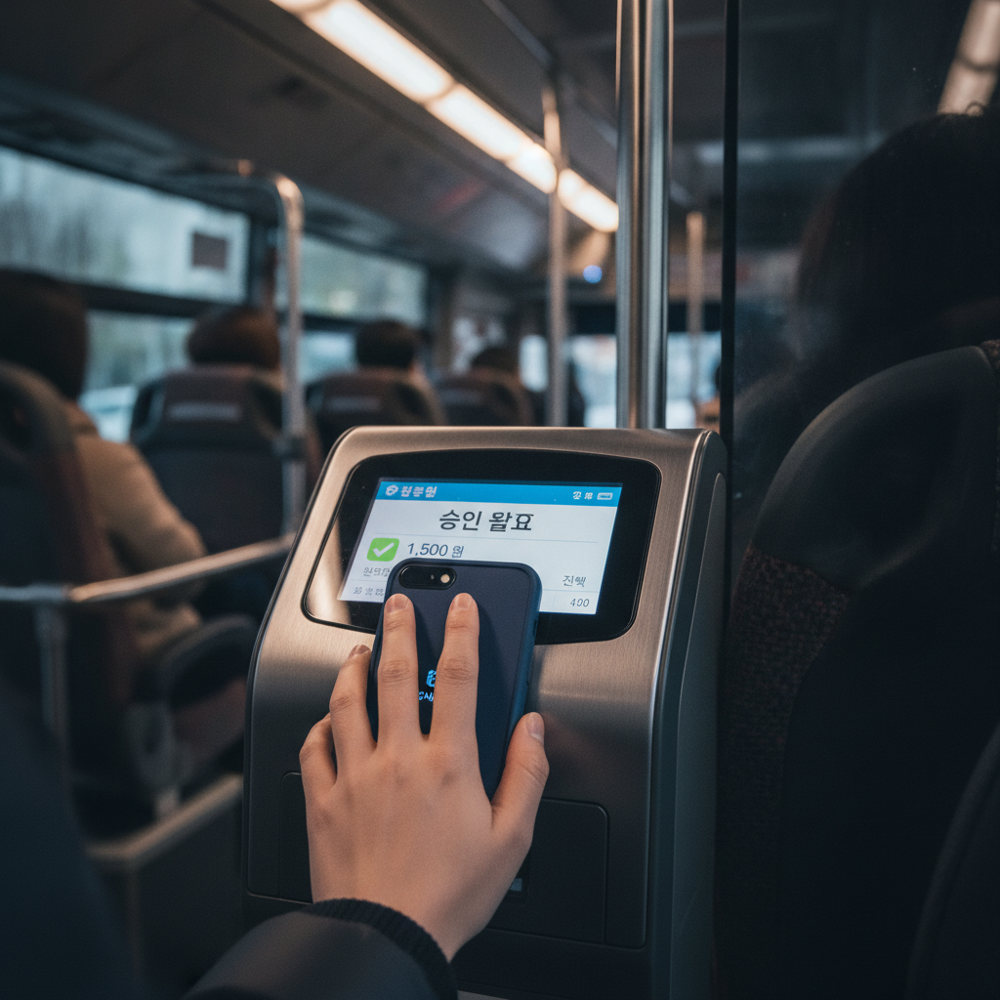
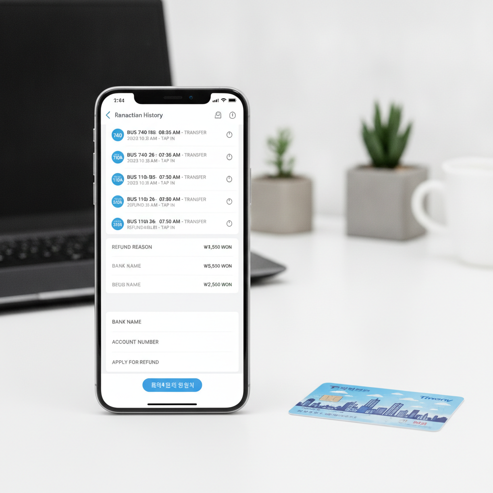

광역버스 환승 할인 안 될 때 — 미적용 원인 5가지와 과다 요금 환불 신청 방법 체크리스트
수도권 광역버스(직행좌석형·M버스)는 일반 시내버스보다 기본요금이 비싸기 때문에 환승 할인이 제대로 적용되지 않으면 한 번에 수천 원의 추가 요금이 부과될 수 있습니다. 정상적으로 환승했다고 생각했음에도 기본요금이 이중 결제되거나 패널티 요금이 발생하는 대표적인 원인은 하차 미태그, 유효시간 초과, 동일 노선 환승 등 5가지 유형으로 압축됩니다. 본 글에서는 환승 할인 미적용의 구체적인 원인과 계산 구조를 밝히고, 부당하게 과다 부과된 교통비를 카드사로부터 전액 환불받는 신청 방법과 증빙 절차를 안내해 드립니다.

광역버스 단말기에 교통카드를 태그하여 환승 요금을 처리하는 모습 / AI 제작 이미지
01 | 광역버스 출퇴근길 환승 할인 누락, 왜 자주 발생하나
수도권 광역버스는 서울과 경기·인천을 오가는 장거리 노선 특성상 기본요금이 일반 시내버스(1,500원)의 두 배에 달하는 3,000원(경기 직행좌석형 기준)에 달합니다. 여기에 지하철이나 시내버스로 갈아탈 때 환승 할인을 받지 못하면 편도 교통비만 4,500원~5,000원을 훌쩍 넘기게 됩니다.
많은 직장인과 학생들이 출퇴근 시간 혼잡한 차내에서 서두르다 하차 단말기 인식을 놓치거나, 배차 간격 지연으로 환승 유효 시간을 넘기는 등 다양한 돌발 변수로 인해 부당한 추가 요금을 지불하고 있습니다.
단말기 화면의 음성 안내("환승입니다" 또는 "하차입니다")를 무심코 지나치면 당일에는 인지하지 못하다가 월말 카드 청구서나 K-패스 마일리지 정산 내역을 보고서야 누락 사실을 발견하는 경우가 적지 않습니다.
02 | 수도권 통합환승할인 기본 원칙과 적용 조건
수도권 통합요금제는 서울시, 경기도, 인천시의 지하철과 버스(간선·지선·광역·마을버스)를 하나의 대중교통망으로 묶어 총 이동 거리에 따라 요금을 비례 부과하는 제도입니다.
기본 환승 규칙은 교통수단 중 가장 높은 기본요금을 최초 탑승 시 지불하고, 갈아탈 때마다 기본요금은 면제되며 통합 이동 거리에 따른 추가 거리 요금(기본거리 초과 시 5km마다 100원 부과)만 지불하는 구조입니다.
환승 할인은 하차 태그 시점으로부터 30분 이내(오후 9시부터 다음 날 오전 7시까지 야간 시간대는 60분 이내)에 다음 대중교통에 승차해야 유효하며, 최대 4회 환승(총 5회 탑승)까지 혜택이 이어집니다.
| 구분 |
일반 시내버스 |
지하철 (기본) |
직행좌석형 광역버스 |
광역급행버스 (M버스) |
| 기본요금 (성인 카드) |
1,500원 |
1,400원 |
3,000원 |
2,800원 |
| 기본 제공 거리 |
10km |
10km |
30km |
30km |
| 초과 요금 기준 |
5km당 100원 |
5km당 100원 |
5km당 100원 |
5km당 100원 |
| 환승 인정 시간 |
주간 30분 이내 / 야간(21시~07시) 60분 이내 |
03 | [원인 1] 하차 태그 누락 및 잔여 거리 패널티 부과 기준
환승 할인이 누락되는 가장 흔한 원인 1위는 직전 교통수단에서의 하차 태그 누락입니다. 목적지에 도착해 내릴 때 단말기에 카드를 찍지 않고 그냥 내리면 시스템은 승객이 종점까지 탑승한 것으로 간주하거나 이동 거리를 측정할 수 없게 됩니다.
이 경우 다음 교통수단에 승차할 때 직전 노선의 최장 이동 거리에 해당하는 패널티 요금(기본요금 수준의 추가 운임)이 부과되며, 동시에 연속 환승 자격이 즉시 소멸하여 새로운 기본요금이 청구됩니다.
특히 광역버스에서 하차 태그를 누락하고 다음 날 아침 지하철을 타면, 지하철 탑승 시 어제 광역버스의 최대 패널티 요금(최대 1,500원 안팎)과 지하철 기본요금(1,400원)이 동시에 찍히는 요금 폭탄을 맞게 됩니다.
04 | [원인 2] 환승 유효 시간 30분(야간 60분) 초과와 단말기 시간 오차
하차 태그를 정상적으로 마쳤더라도 다음 버스나 지하철에 승차 태그를 하기까지의 시간이 30분을 1초라도 초과하면 환승 할인이 적용되지 않고 새로운 기본요금이 전액 결제됩니다.
특히 출퇴근 시간 광역버스는 배차 간격이 20~30분 이상 벌어지는 경우가 잦아 정류장에서 버스를 기다리다가 환승 인정 제한 시간을 넘기는 일이 빈번하게 발생합니다.
또한 드물게 버스 차내 단말기의 전산 시스템 시계가 실제 표준시보다 1~2분 빠르게 설정되어 있어 승객의 스마트폰 기준으로는 29분 만에 탔으나 전산상 31분으로 처리되어 환승이 무산되는 시스템 오류 사례도 존재합니다.

스마트폰 앱을 통해 교통카드 환승 이력과 과다 부과 요금을 조회하는 화면 / AI 제작 이미지
05 | [원인 3] 동일 노선 및 동일 차량 재탑승 시 환승 불가 규정
수도권 통합환승 요금제는 '서로 다른 노선 간의 갈아타기'를 전제로 운임을 할인해 주는 제도입니다. 따라서 번호가 완전히 같은 노선 버스를 다시 타거나 지하철에서 개찰구를 나갔다가 같은 역으로 다시 들어가는 경우에는 환승이 절대 적용되지 않습니다.
예를 들어 수원에서 강남역으로 가는 3000번 광역버스를 타고 가다가 중간 정류장에서 잠시 하차하여 볼일을 본 뒤, 20분 후에 다시 오는 동일한 3000번 버스를 탑승하면 환승 시간이 30분 이내라 할지라도 환승 할인이 되지 않고 3,000원의 기본요금이 고스란히 추가 청구됩니다.
노선 번호가 같은 버스를 연이어 타야 할 때는 중간에 지하철이나 다른 번호의 지선·마을버스를 1회 경유하여 환승 체인을 구성해야 할인을 유지할 수 있습니다.
06 | [원인 4] 4회 환승(총 5회 탑승) 한도 초과 및 카드사 오류
수도권 통합환승할인은 최대 4회 환승, 즉 총 5개의 교통수단 탑승까지만 한정하여 혜택을 제공합니다.
출근 경로가 '마을버스 → 지하철 → 광역버스 → 시내버스 → 마을버스'처럼 5회 탑승을 완료한 후, 추가로 다른 버스로 갈아타는 6번째 탑승부터는 이전의 통합 거리 정산이 강제 종료되고 완전히 새로운 1회 차 승차로 분류되어 기본요금이 새롭게 부과됩니다.
또한 실물 후불교통카드(신용카드)와 삼성페이·모바일티머니 등 모바일 교통카드를 혼용하여 승차와 하차 시 서로 다른 매체를 단말기에 접촉했을 경우에도 시스템은 이를 서로 다른 사람으로 인식하여 환승 할인을 누락시킵니다.
07 | [원인 5] 다인승 환승 시 인원수 변경으로 인한 할인 탈락
동행인이 있어 2인 이상의 요금을 한 장의 카드로 결제하는 '다인승 탑승'의 경우 환승 규정이 매우 엄격합니다.
환승 할인이 인정되려면 승차할 때마다 기사님께 "2명입니다"라고 미리 구두 요청한 뒤 단말기에 태그해야 하며, 환승하는 모든 대중교통에서 탑승 인원수가 단 1명도 달라지지 않고 끝까지 동일해야 합니다.
처음 버스에서 2인으로 결제했다가 다음 광역버스에서 1명만 탑승하여 1인으로 결제하거나, 반대로 1인에서 2인으로 인원을 늘려 승차하면 다인승 환승 체인이 완전히 깨져 전원 환승 할인이 박탈됩니다. (지하철은 시스템상 다인승 환승이 아예 불가하므로 버스 ↔ 지하철 다인 환승은 성립하지 않습니다.)
08 | 교통카드 이용 내역 조회와 부당 과금 확인하는 법
환승 할인이 누락되어 억울하게 추가 요금이 빠져나갔는지 확인하려면 교통카드사의 공식 이용 내역을 상세 조회해야 합니다.
· 티머니(Tmoney) 이용자: 티머니 공식 홈페이지 또는 '모바일티머니' 앱 로그인 → [나의 티머니] → [이용내역조회] 메뉴에서 최근 1년간의 승하차 일시, 이용 노선, 승하차 정류장, 결제 금액, 환승 여부를 건별로 조회할 수 있습니다.
· 이즐(구 캐시비·로카모빌리티) 이용자: '이즐충전소' 앱 또는 공식 홈페이지 내 [거래내역조회] 메뉴에서 상세 내역 확인이 가능합니다.
· 신용·체크카드 후불교통카드: 카드사 앱의 후불교통 이용명세서에서는 승하차 정류장이 생략되는 경우가 많으므로, 티머니나 이즐 정산사 고객센터에 카드번호 16자리를 불러주고 '정산 원장'을 요청해야 정확한 승하차 시간과 환승 누락 초 단위를 확인할 수 있습니다.
09 | 카드사별(티머니·이즐) 과다 요금 환불 신청 단계별 절차
단말기 오작동, 시간 오차, 시스템 오류 등으로 인해 환승 할인이 정상적으로 처리되지 않고 과다 청구된 사실이 확인되었다면 고객센터를 통해 손쉽게 전액 환불받을 수 있습니다.
📞 과다 부과 요금 환불 접수 4단계 절차
1. 정산사 고객센터 연결: 티머니 고객센터(1644-0088) 또는 이즐 고객센터(1644-0006)로 전화하여 상담원 연결을 선택합니다.
2. 카드 번호 및 사고 일자 조회: 사용한 교통카드 번호(실물카드 16자리 또는 모바일 가상카드 번호)와 부당 요금이 결제된 날짜, 대략적인 탑승 시간대, 이용 노선 번호를 안내합니다.
3. 환승 누락 원인 소명: "단말기 접촉은 정상이었으나 기기 오류로 미태그 처리됨" 또는 "배차 간격 지연 및 시스템 시계 오차로 인한 초과" 등 정황을 접수하면 상담원이 전산 로그를 즉시 대조합니다.
4. 환불금 입금 처리: 심사 결과 부당 청구가 인정되면 신청일 기준 2~3 영업일 이내에 신청자 본인 명의 계좌로 과다 부과된 차액(또는 결제 취소)이 현금 입금됩니다.
10 | 환승 누락 재발 방지를 위한 대중교통 이용 습관 체크리스트
매일 반복되는 출퇴근길 소중한 교통비를 지키기 위해 승하차 시 반드시 점검해야 할 행동 요령입니다.
📋 광역버스 환승 할인 사수 체크리스트
1. 단말기 화면과 비프음 확인: 내릴 때 단말기 화면에 '하차입니다' 문구와 잔여 잔액이 정상 표기되는지 1초간 눈으로 확인하세요.
2. 스마트폰 중복 결제 방지: 실물 카드와 모바일 NFC 카드가 겹쳐져 '카드를 한 장만 대주세요' 오류가 뜨면 즉시 단일 카드로 재태그하세요.
3. 광역버스 승차 전 배차 간격 확인: 지하철 하차 후 환승 잔여 시간이 10분 미만인데 광역버스 도착 예정 시간이 15분 이상 남았다면, 중간에 시내버스를 1회 경유하여 환승 시간을 리셋하는 것도 방법입니다.
4. 월 1회 교통카드 명세서 검토: K-패스 환급 신청자나 정기 통근자는 월 1회 정산 내역을 점검하여 누락된 환불 건이 없는지 확인하세요.
#광역버스환승할인
#수도권통합환승
#환승할인안될때
#교통카드환불신청
#티머니환불
#하차태그누락
#패널래요금
#M버스환승
#대중교통요금절약
#K패스환급